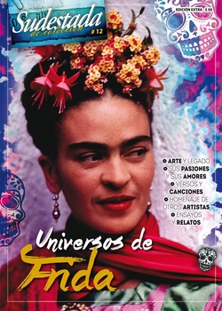

Buscar
En los ojos de los chicos
Relatos, fábulas y relecturas se abren a la lectura infantil con un común denominador: la vida y la obra de Frida Kahlo. ¿Qué extraña simbiosis acerca hoy a Frida al mundo de los niños? ¿Qué rastrea la curiosidad infantil en el universo de la artista mexicana? En este colorido dossier, un repaso por el trabajo de un puñado de ilustradores y narradores que beben en las aguas de Frida para transformar su legado y acercarlo a los pibes de América Latina.
Edición Especial N° 12
Universos de Frida
Sudestada de Colección
Comprar edición impresaSumario
- Viva la vida
- Las pasiones de Frida Kahlo
- Golpes de luz y dolor
- Sobre el verbo "cielar" en las escrituras de Frida
- El romance del demonio y la paloma
- En los ojos de los chicos
- “Prefiero ilustrar la ‘selvitud’ de la aventura”
- Autorretrato
Compartir Articulo
Frida la pequeña que salía a pintar paisajes con su padre, Frida la niña renga, Frida la adolescente accidentada, rota, inmóvil. La que pintó su vida con trazos infantiles, la que llenó de colores: el azul de su casa, el rojo de la sangre, el verde de la feroz naturaleza mexicana. También, la que se vistió multicolor, la que se llenó de aros, collares y anillos y flores en el pelo. Y, por qué no, la que se rodeó de animales y los dibujó junto a ella en sus cuadros.
Todo eso es el universo de Frida para que niñas y niños se llenen de estímulos, se devoren sus trazos. Pero además de todo eso, también supo ser una mujer que salió a romper lo establecido por la sociedad: contra la burla en su escuela primaria, la seguridad en la secundaria, la inteligencia y el desenfado; frente al deseo limpio y planchado de su madre, la foto vestida de hombre junto a su hermana y primas; ante un México de hombres muralistas que pintaban la revolución, las pequeñas telas con su revolución interna, que eran reflejo de muchas mujeres más.
La ruptura de la mano de la búsqueda de completitud: el rearmarse en el lienzo, el cuerpo completo a través del goce y la construcción entre muchos, en una tierra atravesada por una revolución.
En estas huellas podemos encontrar los motivos para que Frida, más allá del ícono en serie que algunas modas pretenden imponer (el mismo que han pretendido para el Che, el mismo que cantara Bersuit: "Hoy tu cara está en todas las remeras… y es un muerto que no para de nacer"), llegue a las pibas y a los pibes como un viento fresco ante tanta princesa curvilínea, paciente y con destino de realeza. Ante tanto deseo en el aire de un cuerpo joven y siempre de baile, de un príncipe (o jugador de fútbol) que cumpla el deseo de una vida de reina en el viejo Continente… está Frida, la imperfecta, la contradictoria, la peluda, la bella artista revolucionaria que pone su cuerpo a gozar y se enamora no una, sino varias veces de amigas, amigos, amantes y marido.
Tal vez ahí se encuentre el origen de las Antiprincesas, mujeres de Nuestra América, chicas de carne y hueso que salieron a buscar su destino, que desandaron –cada una a su manera– el arte popular, que lo transformaron para devolverlo al pueblo (a veces, aunque no hayan podido verlo), que siguen trascendiendo al tiempo porque su tiempo no se termina nunca. Y porque eso que llamamos "estereotipos", y que no son otra cosa que encasillar infancias tan diversas como posibles, se pone en cuestión cuando se rasca un poco la pintura con la que nos ilustraron los cuentos de hadas o el photoshop con el que nos muestran las fotos perfectas, luminosas y felices de las "mujeres de hoy".
Y entonces, vemos una obra, la de nuestra Kahlo, que no hace falta rascar porque lo que se cuenta está ahí: una denuncia contra el femicidio, una forma particular de contarle a una madre el suicidio de su hija, una comparación entre un México plagado de naturaleza creadora contra un frío e industrial Estados Unidos que todo lo devora, los mitos y la cultura indígena, o la desilusión de un amor despechado. ..
(La nota completa en la edición gráfica de Sudestada)
Comentarios

Sudestada
El colectivo de Revista Sudestada esta integrado por Ignacio Portela, Hugo Montero, Walter Marini, Leandro Albani, Martín Latorraca, Pablo Fernández y Repo Bandini.
Articulos más vistos


LIBRERÍA SUDESTADA

Colección infantil

Distribuidora de Libros

Suscripción

Sudestada en URUGUAY

Otros articulos de esta edición
Sobre el verbo "cielar" en las escrituras de Frida
Frida Kahlo es una de esas artistas que ha cautivado a muchos, justo como cautivan las vidas de aquellos que ...
Las pasiones de Frida Kahlo
Es febrero de 1925. Frida yace sobre una cama. Inmóvil. El corsé de yeso le permite apenas que el aire ...
 Poesía
Poesía
Autorretrato
El romance del demonio y la paloma
Secreto a voces, vínculo clandestino y peligroso, amorío furtivo y abrasador, Frida Kahlo y León Trotsky se vieron enredados en ...
Viva la vida
Pudo haber sido la protagonista de una vieja leyenda azteca, pero no. Fue más que eso. Fue la historia de ...